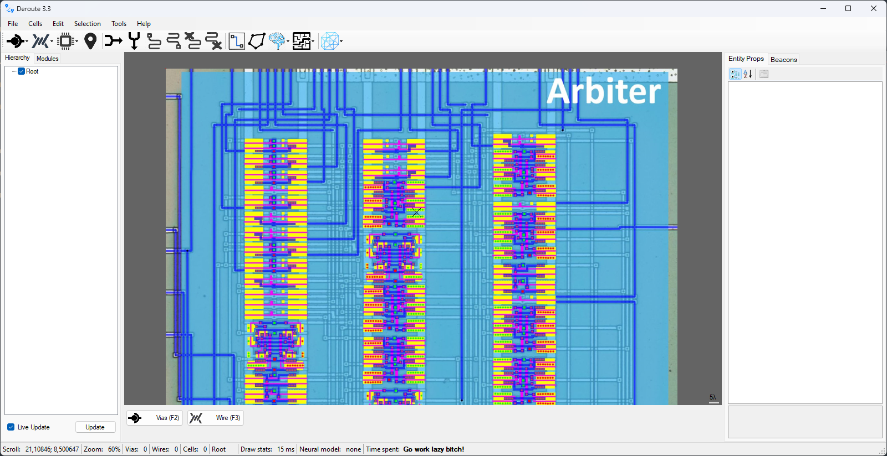
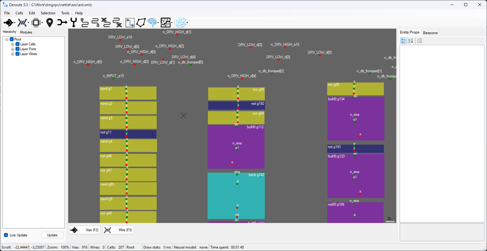
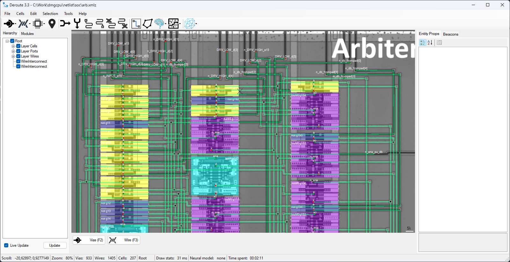
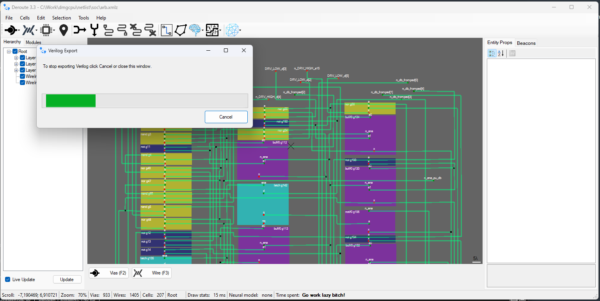

netlist
This section contains netlist sources, which are obtained in the Deroute utility.
There are several stages in the netlist recovery process.
Get master dataset
It is necessary to prepare a source picture, by which the netlist will be restored. We call such pictures “master dataset”. Usually the big picture of the chip is cut into small modules (where possible) and the netlist of each module is obtained separately (this is a natural process of modular reverse-engineering).
The topology is partially marked on the original image, enough to trace interconnects and to identify cell types.
The image is then loaded into Deroute:

Partitioning the module ports
The first step is to mark all top-level ports of the module:

(ViasInput, ViasOutput, ViasInout entity types are used for ports)
Layout module cells
Then you need to arrange all the cells of the module. Here it is convenient to use Copy-Paste operation (Ctrl+C -> Ctrl+V).

(Cell entities of different types are used for cells)
Interconnects
The most interesting process is untangling the maze of wires. It is convenient to use Ctrl+arrows, Ctrl+Shift+arrows and Shift+Click in Add Vias mode to quickly draw wires.

(WireInterconnect entity type is used for interconnections)
Export Verilog
That's all. You just need to click on Export Verilog item in the menu, Deroute utility will start to do its magic and give you a ready Verilog source.

Then you can feed the resulting Verilog to some EDA (e.g. Xilinx PlanAhead) and get a finished module schematic.